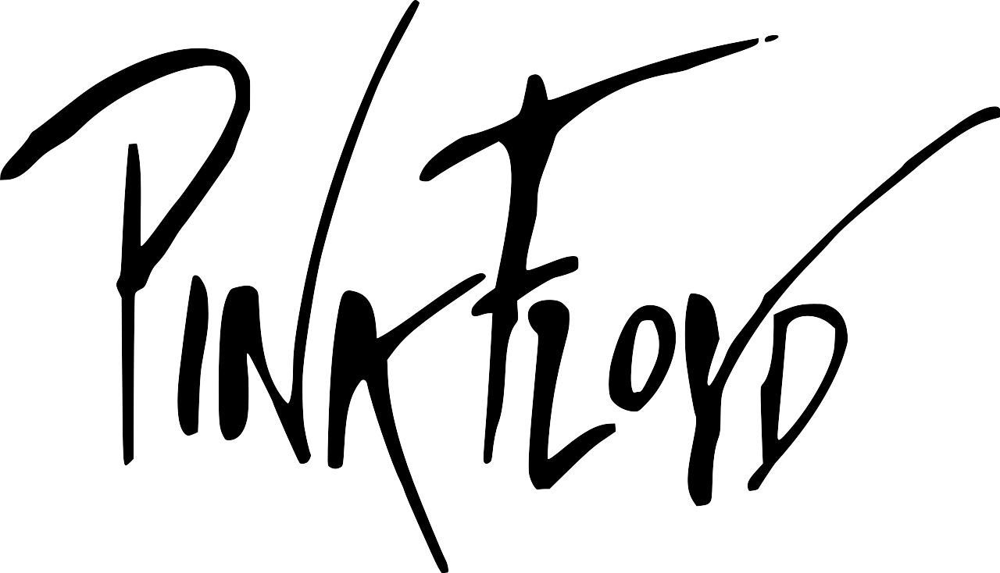

Top 1

Pink Floyd fue una banda de rock británica, fundada en Londres en 1965. Considerada un ícono cultural del siglo XX y una de las bandas más influyentes, exitosas y aclamadas en la historia de la música popular, obtuvo gran popularidad dentro del circuito underground gracias a su música psicodélica y espacial, que con el paso del tiempo evolucionó hacia el rock progresivo y el rock sinfónico adquiriendo la popularidad con la que hoy son recordados.
Top 2
Radiohead es una banda británica de rock alternativo y art rock originaria de Abingdon-on-Thames, Inglaterra, formada en 1985. Está integrada por Thom Yorke (voz, guitarra, piano), Jonny Greenwood (guitarra solista, teclados, otros instrumentos), Ed O'Brien (guitarra, segunda voz), Colin Greenwood (bajo, teclados) y Phil Selway (batería, percusión).
Top 3
Alice in Chains es una banda de grunge estadounidense fundada en 1987 en Seattle. Formó parte del movimiento grunge en los años 1990, con un sonido más pesado y orientado al heavy metal que los grupos más cercanos del género. La banda logró emerger de la escena de Seattle hasta convertirse en una de las bandas más importantes del género grunge, llegando a vender más de 30 millones de discos en todo el mundo, y más de 14 millones de discos solo en los EE.UU.